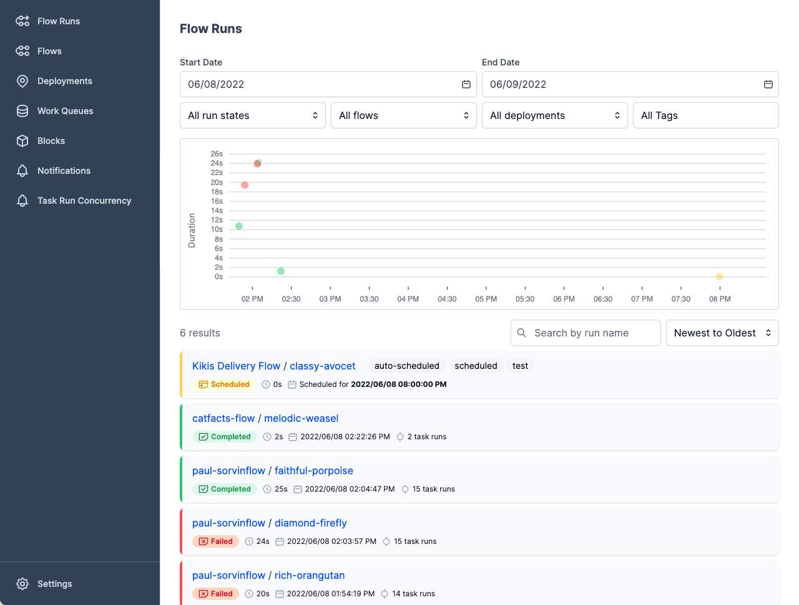

Flow orchestration with Prefect¶
Up to this point, we've demonstrated running Prefect flows and tasks in a local environment using the ephemeral Prefect Orion API. As you've seen, it's possible to run flexible, sophisticated workflows in this way without any further configuration.
Many users find running flows locally is useful for development, testing, and one-off or occasional workflow execution.
Where you begin leveraging the full power of Prefect is when you begin using Prefect for flow coordination and orchestration — building, running, and monitoring your workflows at scale.
Orchestration with Prefect helps you schedule and deploy workflows that run in the environments best suited to their execution. Orchestration helps you prevent and recover from failures, and view and manage the status of workflows, making your workflow:
- Resilient
- Observable
- Configurable
- Interactive
- Automated
Prefect orchestration components¶
Designing workflows with Prefect starts with a few basic building blocks that you've already seen: flows and tasks.
Creating and running orchestrated workflows takes advantage of some additional Prefect components.
- Prefect Orion API server and orchestration engine receives state information from workflows and provides flow run instructions for executing deployments.
- Prefect database provides a persistent metadata store that holds flow and task run history.
- Prefect UI provides a control plane for monitoring, configuring, analyzing, and coordinating runs of your workflows.
- Storage for flow and task data lets you configure a persistent store for flow code and flow and task results.
- Agents and work queues bridge the Prefect orchestration engine with a your execution environments, organizing work that agents can pick up to execute.
These Prefect components and services enable you to form what we call a dedicated coordination and orchestration environment. The same components and services enable you to coordinate flows with either the open-source Prefect Orion API server and orchestration engine or Prefect Cloud.
Let's take a closer look at each component.
Prefect Orion API server¶
The Prefect Orion API server and orchestration engine is the central component of your Prefect workflow environment.
Without you having to configure or run anything other than your flow code, the ephemeral Prefect API keeps track of the state of your Prefect flow and task runs.
When you run Prefect Orion with prefect orion start, the Prefect Orion orchestration engine keeps track of the state of your Prefect flow and task runs, and also lets you:
- Create and manage deployments
- Create and manage configuration for storage and services used by your flows
- Execute scheduled flow runs for deployments automatically
- Execute ad hoc flow runs
- Create and manage work queues
- View logs generated by flow and task runs
- Configure notifcations based on flow run state changes
...on top of monitoring the state of your flows and tasks.
If your execution environment is logged into Prefect Cloud, Prefect's orchestration-as-a-service platform provides all the capabilities of the Prefect Orion orchestration engine in a hosted manner.
Running the Prefect server¶
To take full advantage of the Prefect Orion orchestration engine and API server, you can spin up an instance at any time with the prefect orion start CLI command:
$ prefect orion start
Starting...
___ ___ ___ ___ ___ ___ _____ ___ ___ ___ ___ _ _
| _ \ _ \ __| __| __/ __|_ _| / _ \| _ \_ _/ _ \| \| |
| _/ / _|| _|| _| (__ | | | (_) | /| | (_) | .` |
|_| |_|_\___|_| |___\___| |_| \___/|_|_\___\___/|_|\_|
Configure Prefect to communicate with the server with:
prefect config set PREFECT_API_URL=http://127.0.0.1:4200/api
Check out the dashboard at http://127.0.0.1:4200
Set the PREFECT_API_URL for your server
Note the message to set PREFECT_API_URL — configuring the URL of your Prefect Orion server or Prefect Cloud makes sure that you're coordinating flows with the correct API instance.
Go to your terminal session and run this command to set the API URL to point to the Prefect Orion instance you just started:
$ prefect config set PREFECT_API_URL=http://127.0.0.1:4200/api
Set variable 'PREFECT_API_URL' to 'http://127.0.0.1:4200/api'
Updated profile 'default'
If you're using Prefect Cloud, the prefect cloud login command provides an interactive login experience, enabling you to configure your local execution environment with either an API key or through a browser.
When the Prefect API server is running (either in a local environment or using Prefect Cloud), you can create and run orchestrated workflows including:
- Creating deployments
- Scheduling flow runs
- Configuring agents and work queues
- Executing ad hoc flow runs from deployments
During normal operation, we don't expect that most users will need to interact with the Prefect API directly, as this is handled for you automatically by the Prefect Python client and the Prefect UI. Most users will spin up everything all at once with prefect orion start.
There are numerous ways to begin exploring the API:
- Navigate to http://127.0.0.1:4200/docs (or your corresponding API URL) to see the autogenerated Swagger API documentation.
- Navigate to http://127.0.0.1:4200/redoc (or your corresponding API URL) to see the autogenerated Redoc API documentation.
- Instantiate [an asynchronous
OrionClient][/api-ref/prefect/client/orion/#prefect.client.orion.OrionClient] within Python to send requests to the API.
To stop an instance of the Orion API server, simply CTRL+C to end the process in your terminal, or close the terminal session.
Scheduled flow runs require an Prefect API service
If you create deployments that have schedules, the scheduled flow runs will only attempt to start if the Prefect API server is running or your execution environment is logged into Prefect Cloud. The ephemeral Prefect API does not start scheduled flow runs.
Prefect database¶
The Prefect database persists data used by many features to orchestrate and track the state of your flow runs, including:
- Flow and task state
- Run history and logs
- Deployments
- Flow and task run concurrency limits
- Storage locations for flow and task results
- Work queue configuration and status
Currently, Prefect supports configuring the following for use as the database:
- SQLite
- PostgreSQL
A local SQLite database is the default for Prefect, and a local SQLite database is configured on installation. We recommend SQLite for lightweight, single-server deployments. SQLite requires essentially no setup.
PostgreSQL is good for connecting to external databases, but does require additional setup (such as Docker).
Prefect Cloud provides its own hosted database.
Configuring the Prefect database¶
Prefect creates a SQLite database, but you can configure your own database.
When you first install Prefect, your database will be located at ~/.prefect/orion.db. To configure this location, you can specify a connection URL with the PREFECT_ORION_DATABASE_CONNECTION_URL environment variable:
$ export PREFECT_ORION_DATABASE_CONNECTION_URL="sqlite+aiosqlite:////full/path/to/a/location/orion.db"
prefect orion database reset CLI command:
$ prefect orion database reset
This will completely clear all data and reapply the schema.
See the Database documentation for further details on choosing and configuring the Prefect database.
Prefect UI and Prefect Cloud¶
The Prefect UI comes prepackaged with the Prefect Orion API when you serve it. By default it can be found at http://127.0.0.1:4200/:

The UI enables you to track and manage your flows, runs, and deployments and additionally allows you to filter by names, tags, and other metadata to quickly find the information you are looking for.
The UI displays many useful insights about your flow runs, including:
- Flow run summaries
- Deployed flow details
- Scheduled flow runs
- Warnings for late or failed runs
- Task run details
- Radar flow and task dependency visualizer
- Logs
You can also use the Prefect UI to create ad hoc flow runs from deployments, configure and manage work queues, and more.
See the Prefect UI & Cloud documentation for more information about using the Prefect UI.
Storage for flow and task data¶
Prefect lets you configure separate storage to persist flow code, task results, and flow results.
If you don't configure other storage, Prefect uses temporary local storage. Temporary local storage works fine for many local flow runs, but if you run flows using Docker or Kubernetes, you must set up remote storage.
Prefect blocks enable you to create storage configurations for a wide variety of common storage types and cloud services. You can configure storage blocks through the Prefect UI Blocks page or programmatically via the Python API.
Agents and work queues¶
Agents and work queues bridge the Prefect Orion orchestration engine and API with your local execution environments.
- Work queues are configured on the server. They contain logic that determines which flow runs a given queue will serve to waiting agents.
- Agents run in a local execution environment. They pick up work from a specific work queue and execute those flow runs.
You can create work queues:
Agents are configured to pull work from a specific work queue. You'll use the CLI to start an agent in your execution environment. If you configure work queues in the Prefect UI, the work queue panel provides the CLI command: you can simply copy the entire command and run it in your execution environment.
Next steps: Deployments
Continue on to the Deployments tutorial to start seeing flow orchestration with Prefect in action.